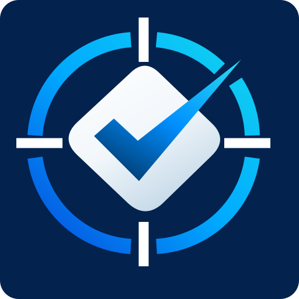

ASMachInspection Software
Resmî yayın ve doğrulama kaynağı
Bu HTTPS adresi, ASMach Inspection Windows masaüstü uygulamasının resmî yayın kaynağıdır.
Güvenli güncelleme 3.0.2 yayınlandı.
ASMach açılışta ve Ayarlar bölümündeki “Güncelleştirmeleri denetle” seçeneğiyle yeni sürümü denetler. Güncelleme onaylandığında çalışma verileri kaydedilir, paket imzası ve SHA-256 özeti doğrulanır; ardından uygulama tamamen kapatılarak kurulum başlatılır. Windows kod imzalama sertifikası bulunmadığından kurulum sırasında “Bilinmeyen yayıncı” uyarısı görülebilir.
ASMach açılışta ve Ayarlar bölümündeki “Güncelleştirmeleri denetle” seçeneğiyle yeni sürümü denetler. Güncelleme onaylandığında çalışma verileri kaydedilir, paket imzası ve SHA-256 özeti doğrulanır; ardından uygulama tamamen kapatılarak kurulum başlatılır. Windows kod imzalama sertifikası bulunmadığından kurulum sırasında “Bilinmeyen yayıncı” uyarısı görülebilir.
- Ürün
- ASMach Inspection
- Platform
- Windows
- Güncel sürüm
- 3.0.2
- Yayın durumu
- Güvenli güncelleme hazır